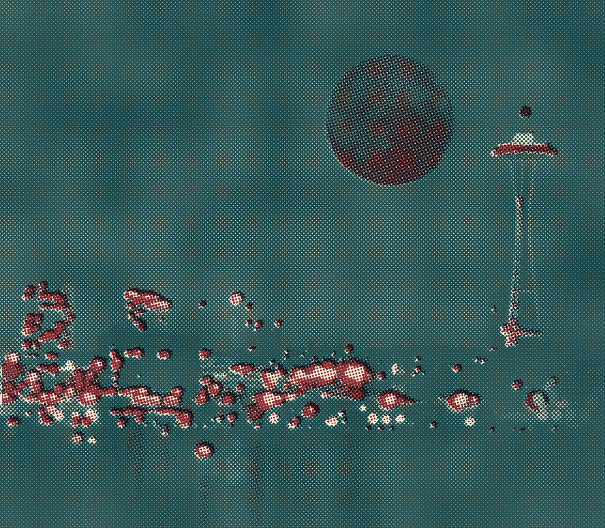
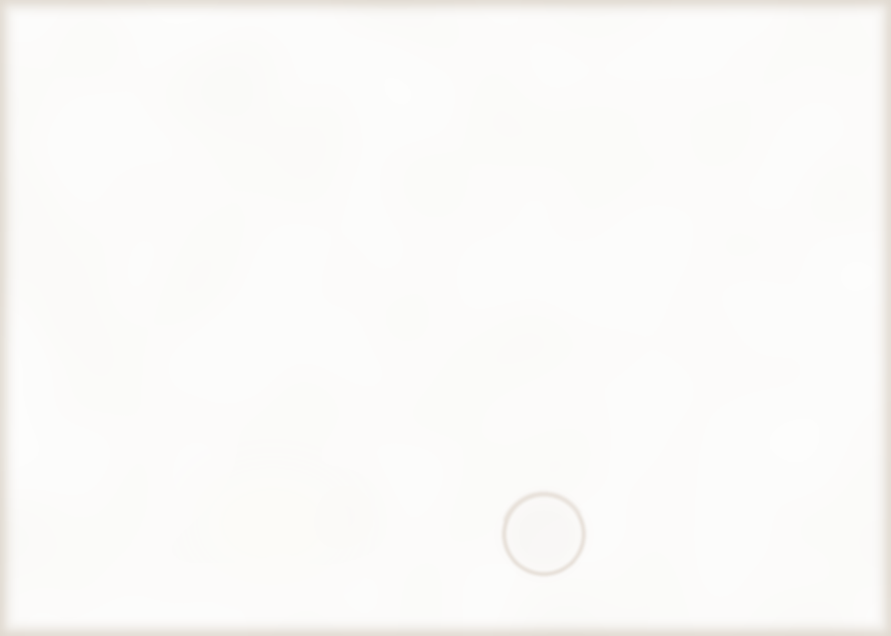

Night Owl
DOCK CAFE
OPEN TILL 2 AM
On the houseboat docks, Lake Union · (206) 555-0193

THE VIEW FROM OUR BACK DECKPHOTO BY A REGULAR
Sleepless in Seattle? So are we.
Hot food every night till 2 AM, with Dr. Marcia Fieldstone’s call-in show on the radio.
DECKHANDS’ WORD SEARCH
CRAYONS AT THE COUNTER
H
H
O
U
S
E
B
O
A
T
P
F
K
S
E
D
F
L
U
W
G
N
E
A
B
N
W
R
A
I
N
M
E
R
Y
M
O
C
H
A
B
S
A
E
R
A
S
T
T
E
B
P
L
G
D
Y
K
R
R
J
O
N
A
H
I
L
E
G
F
D
U
P
E
S
M
C
E
M
F
B
S
A
L
M
O
N
L
H
FIND THESE
HOUSEBOAT
FERRY KAYAK
NEEDLE
MOCHA RAIN
SALMON
FERRY KAYAK
NEEDLE
MOCHA RAIN
SALMON
Two names are hiding too.
FROM THE DOCK
Northwest salmon dip
4.95
Hot-smoked fish blended into cream cheese with dill, capers, lemon and a bite of horseradish. Toasted bagel chips.
We ship it anywhere, even Baltimore.
Clam chowder
cup 2.25 bowl 3.50
Puget Sound Manilas, potato, onion and bacon simmered in cream. Oyster crackers.
Late show popcorn
1.50
Popped to order in coconut oil, tossed with browned butter and coarse sea salt.
Radio on till the call-in show signs off.
SUPPERSfrom 5 PM
Baked salmon
10.95
Fillet under a crust of parsley, bread crumbs and grated lemon peel. Steamed green beans, warm butter spooned over.
Mild and gentle. Nothing to sneeze at.
Meat loaf
6.95
Thick slice, brown gravy, mashed potatoes and peas.
BREAKFAST ALL NIGHT
Two eggs any style
3.75
Hash browns, toast or a biscuit, bacon or link sausage.
DECKHANDS’ PLATES10 and under
Grilled cheese
2.95
American on white bread, a cup of tomato soup, apple slices.
SWEETS
Valentine hearts
2 for 2.14
Sugar cookies cut by hand, iced red and white.
Baked through February 14.
Tiramisu
3.25
Espresso-soaked ladyfingers layered with mascarpone and cocoa.
What is it? You’ll see.
Marionberry pie
2.75
Oregon berries under a lattice top. À la mode, 75¢ more.
COFFEE BAR
Iced mocha
2.25
Strong drip coffee with dark chocolate melted in, cold milk, plenty of ice and whipped cream.
Yes, even in February.
Caffe latte
1.75
Double shot of espresso, steamed milk.
Drip coffee
.75
Dark roast, bottomless cup.
Hot cocoa
1.25
Whole milk, marshmallows.
DID YOU KNOW?
1.Seattle gets less rain in a year than New York.
2.The Space Needle opened for the 1962 World’s Fair.
3.The city is named for Chief Sealth.
Valentine’s Day
SUNDAY, FEBRUARY 14 · OPEN LATE
A heart on every saucer.
PRINTED ON RECYCLED PAPER. PLEASE RECYCLE.PAY AT THE COUNTER. CASH OR LOCAL CHECKS, PLEASE.

